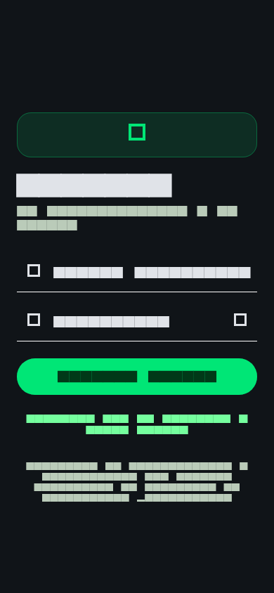
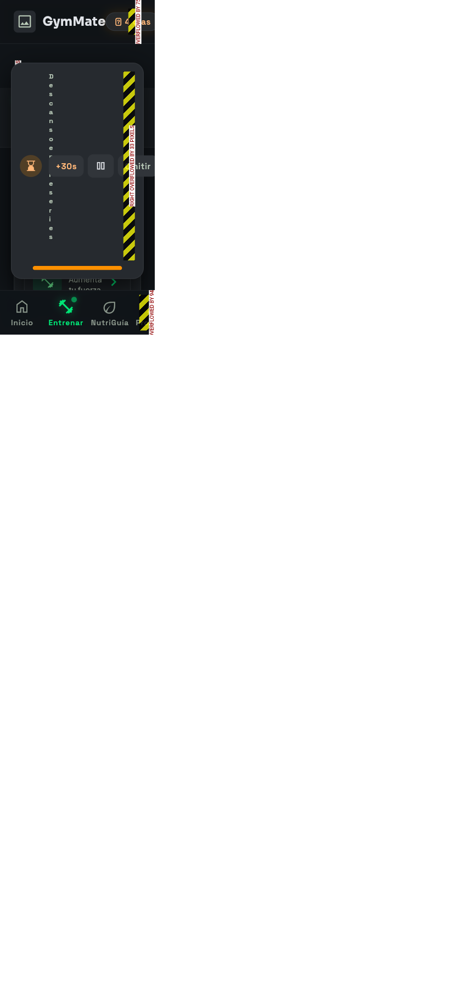
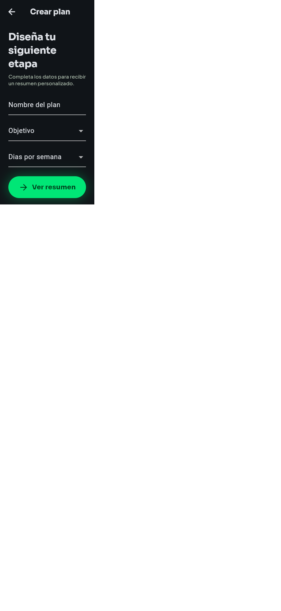
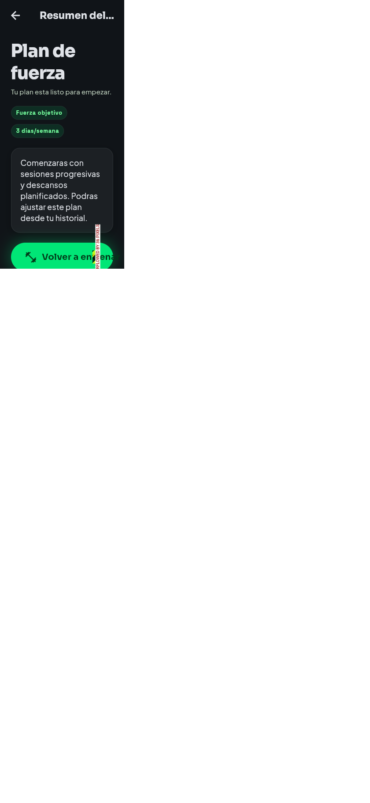

GymMate
Entrenamiento con guía. Alimentación con criterio.
Vanessa Ospina · Salome Caicedo
Entregable 1 · 26 de septiembre de 2026
Empezar a entrenar no debería sentirse como adivinar.
Una persona puede no saber qué ejercicio hacer, cómo registrar una serie o cómo reconocer su progreso. A la vez, encuentra consejos de alimentación que se contradicen.
GymMate reúne una guía práctica para acompañar la sesión y un espacio educativo en el mismo teléfono.
Una experiencia de entrenamiento de principio a fin.
La app informa y acompaña; no diagnostica ni prescribe.
GYMMATE · PROYECTO MÓVILMediremos si las personas pueden usarla sin ayuda.
- 80 % inicia una rutina sin ayuda.
- 80 % registra correctamente una serie.
- Encuentra un ejercicio en menos de 30 segundos.
- 80 % comprende cómo armar un plato.
El objetivo general es ayudar a organizar entrenamientos, registrar el progreso y adquirir conocimientos básicos de alimentación.
Estas métricas se validarán con participantes de prueba; todavía no son resultados medidos.
De entrar a la app a revisar el propio avance.
En el MVP: perfil, rutinas, sesión con temporizador, progreso y NutriGuía.
Fuera del MVP: diagnóstico, dietas médicas, pagos, chat, dispositivos y asesoría en vivo.
Las capturas muestran el prototipo Flutter actual en tamaño móvil.


Las rutas salen del flujo de trabajo del usuario.
La barra inferior conecta Inicio, Entrenar, NutriGuía, Progreso y Perfil.
GYMMATE · PROYECTO MÓVILFlutter sencillo, pantallas separadas y rutas entendibles.
lib/screens/Vistas principales y secundarias.
lib/widgets/Componentes y navegación inferior.
lib/models/Rutinas, ejercicios y datos de vista.
lib/data/Datos de demostración.
Las pestañas permanecen dentro de AppShell. Los recorridos secundarios usan Navigator.push/pop.
El detalle recibe el RoutineCategory seleccionado; el resumen recibe el WorkoutPlan validado.
El login y los datos son demostrativos. Persistencia y autenticación real son trabajo posterior.
La navegación ya prueba el contrato entre pantallas.
- RF-03: mostrar rutinas y detalle de categoría.
- RF-04: validar nombre, objetivo y frecuencia.
- RNF-03: permitir volver desde pantallas secundarias.
- RNF-04: datos por usuario; persistencia pendiente.
Modelo previsto
Usuario → Perfil · Entrenamiento → Registro → Ejercicio · Comida → Alimento · Usuario → Logro
El almacenamiento persistente se implementará en una fase posterior del MVP.
Un recorrido breve por el código que sí corre.
- Ingresar desde P-01 y mostrar Inicio.
- Abrir Entrenar y seleccionar una categoría.
- Volver y crear un plan con frecuencia.
- Revisar cómo el resumen recibe el modelo.
- Visitar NutriGuía y Progreso.


GymMate acompaña. El usuario decide.
Una experiencia móvil para organizar sesiones, aprender con criterio y reconocer el progreso.
Preguntas
¿Qué decisión del proyecto les gustaría que expliquemos?